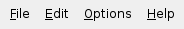

| Home · All Classes · Main Classes · Grouped Classes · Modules · Functions |
The QMenuBar class provides a horizontal menu bar. More...
#include <QMenuBar>
Inherits QWidget.
The QMenuBar class provides a horizontal menu bar.
A menu bar consists of a list of pull-down menu items. You add menu items with addMenu(). For example, asuming that menubar is a pointer to a QMenuBar and fileMenu is a pointer to a QMenu, the following statement inserts the menu into the menu bar:
menubar->addMenu(fileMenu);
The ampersand in the menu item's text sets Alt+F as a shortcut for this menu. (You can use "&&" to get a real ampersand in the menu bar.)
There is no need to lay out a menu bar. It automatically sets its own geometry to the top of the parent widget and changes it appropriately whenever the parent is resized.
In most main window style applications you would use the menuBar() provided in QMainWindow, adding QMenus to the menu bar and adding QActions to the popup menus.
Example (from the Menus example):
fileMenu = menuBar()->addMenu(tr("&File"));
fileMenu->addAction(newAct);
Menu items may be removed with removeAction().

QMenuBar on Qt/Mac is a wrapper for using the system-wide menubar. If you have multiple menubars in one dialog the outermost menubar (normally inside a widget with widget flag Qt::Window) will be used for the system-wide menubar.
Qt/Mac also provides a menubar merging feature to make QMenuBar conform more closely to accepted Mac OS X menubar layout. The merging functionality is based on string matching the title of a QMenu entry. These strings are translated (using QObject::tr()) in the "QMenuBar" context. If an entry is moved its slots will still fire as if it was in the original place. The table below outlines the strings looked for and where the entry is placed if matched:
| String matches | Placement | Notes |
|---|---|---|
| about.* | Application Menu | About <application name> | If this entry is not found no About item will appear in the Application Menu |
| config, options, setup, settings or preferences | Application Menu | Preferences | If this entry is not found the Settings item will be disabled |
| quit or exit | Application Menu | Quit <application name> | If this entry is not found a default Quit item will be created to call QApplication::quit() |
The Menus example shows how to use QMenuBar and QMenu.
{fowler}{GUI Design Handbook: Menu Bar}
See also QMenu, QShortcut, QAction, and Introduction to Apple Human Interface Guidelines.
This property holds the popup orientation.
The default popup orientation. By default, menus pop "down" the screen. By setting the property to true, the menu will pop "up". You might call this for menus that are below the document to which they refer.
If the menu would not fit on the screen, the other direction is used automatically.
Access functions:
Constructs a menu bar with parent parent.
Destroys the menu bar.
Returns the QAction that is currently highlighted. A null pointer will be returned if no action is currently selected.
See also setActiveAction().
This convenience function creates a new action with text. The function adds the newly created action to the menu's list of actions, and returns it.
See also QWidget::addAction().
This is an overloaded member function, provided for convenience.
This convenience function creates a new action with the given text. The action's triggered() signal is connected to the receiver's member slot. The function adds the newly created action to the menu's list of actions and returns it.
See also QWidget::addAction().
Appends menu to the menubar. Returns the menu's menuAction().
See also QWidget::addAction() and QMenu::menuAction().
This is an overloaded member function, provided for convenience.
Appends a new QMenu with title to the menubar. The menubar takes ownership of the menu. Returns the new menu.
See also QWidget::addAction() and QMenu::menuAction().
This is an overloaded member function, provided for convenience.
Appends a new QMenu with icon and title to the menubar. The menubar takes ownership of the menu. Returns the new menu.
See also QWidget::addAction() and QMenu::menuAction().
Appends a separator to the menu.
Removes all the actions from the menu bar.
See also removeAction().
This signal is emitted when a menu action is highlighted; action is the action that caused the event to be sent.
Often this is used to update status information.
See also triggered() and QAction::hovered().
This convenience function inserts menu before action before and returns the menus menuAction().
See also QWidget::insertAction() and addMenu().
Sets the currently highlighted action to act.
This function was introduced in Qt 4.1.
See also activeAction().
This signal is emitted when a menu action is selected; action is the action that caused the event to be sent.
Normally, you connect each menu action to a single slot using QAction::triggered(), but sometimes you will want to connect several items to a single slot (most often if the user selects from an array). This signal is useful in such cases.
See also hovered() and QAction::triggered().
| Copyright © 2006 Trolltech | Trademarks | Qt 4.1.3 |